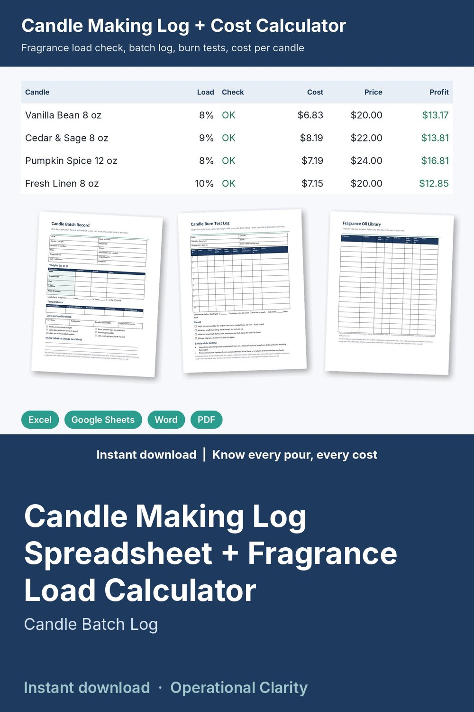

Candle Making Log Spreadsheet + Fragrance Load Calculator

Know exactly how much wax and fragrance to weigh, catch an over-loaded pour before a customer does, and see what every candle really costs: a candle making log that does the math, plus printable logs for your pouring station.
WHAT'S INSIDE
- Candle Making Log & Cost Calculator (Excel / Google Sheets, 9 tabs):
* Supplies: wax, fragrance oils, wicks, vessels, labels and boxes. Cost per oz or each, max fragrance load, stock on hand and REORDER alerts that update from your batches
* Recipes: wax and fragrance per candle from your fill weight and load %, a max-load check, cost per candle (materials + labor + overhead), suggested retail, profit, margin, wholesale price and wholesale profit, with alerts if a price falls below cost
* Pour Planner: pick a recipe and how many candles; get exact wax and fragrance weights in oz, grams and pounds (with a waste allowance), wicks, vessels, batch cost, ready date and whether you have enough stock
* Batch Log: automatic lot numbers, the real fragrance load you poured with an OVER flag, cure days, ready date, CURING / READY status, batch cost, cost per candle, candles sold and left
* Burn Tests: melt pool, depth, flame height, soot, hot throw, with an automatic PASS / CHECK result
* Sales: log sales by lot; revenue, cost and profit calculate and stock updates
* Dashboard: candles curing and ready, next ready date, over-load batches, reorder alerts, revenue and profit by month, by-recipe summary and chart
- Printable logs (Word + PDF, 6 pages): Candle Batch Record with load check and quality checklist, Recipe Cards (2 per page), Burn Test Log (10 burns), Wick Comparison Test (4 wicks), Fragrance Oil Library, Supply Inventory & Reorder Log
- START HERE guide (PDF)
HOW IT WORKS
1. Enter your supplies once with package size, price and max load.
2. Build each recipe: vessel, fill weight, wax, fragrance and load %, wick.
3. Before you pour, the Pour Planner tells you exactly what to weigh.
4. Log the actual amounts in the Batch Log; the sheet checks the real load, sets the ready date and tracks stock.
5. Record burn tests and sales; the Dashboard shows what is ready, what to reorder and what you earned.
Example data (4 sample recipes) shows how it all connects; delete it and type your own. Yellow cells = type here, green cells = calculated.
FORMATS
- Excel .xlsx (works in Excel and Google Sheets)
- Word .docx (edit in Microsoft Word, Google Docs, Pages or LibreOffice) + PDF, US Letter
This is an instant digital download, no physical item will be shipped.
For planning and record keeping only, not a safety certification. Always follow your wax, wick and fragrance suppliers' maximum usage rates and safety data, test-burn every new combination, and use the warning labels required where you sell.